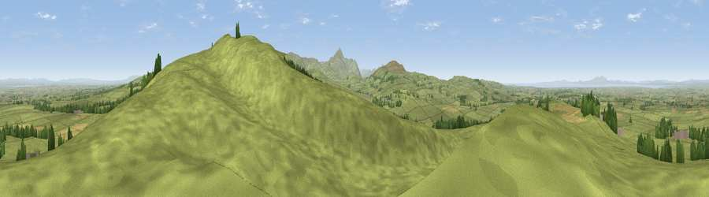

Viewpoint near Ireby
#3929 in England · top 28% of its area beats it · near IrebyThe view, rendered

A 360° render of this exact spot computed from the terrain model, tree cover and land cover — summer colours, afternoon light, calibrated against photographs of famous viewpoints. Real trees, hedges and buildings will differ in detail.
The panorama
Grey silhouette: terrain skyline in each direction (720 bearings, Earth curvature and refraction included). Dashed green: skyline with trees (+15 m) and buildings (+8 m) as obstacles. Blue strip: how far the ground is visible on each bearing.
Where the view opens
Wedge length = distance to the farthest visible ground on that bearing (vegetation-aware). Rings at 10, 25 and 50 km.
What fills the view
90% grassland · 5% cropland · 3% woodland · 1% water ·
Angular shares of the visible panorama (visual magnitude), not map area. Landscape diversity 0.19 (0–1 Shannon).
Key numbers
More beautiful places nearby
The staircase of upgrades: each row has a higher view potential than everything closer. Driving times are estimates from straight-line distance, calibrated against real road routing — check an actual route before setting out.
| Place | Direction | Drive | Score |
|---|---|---|---|
| Viewpoint near Ireby | ESE · 1 km | ~2 min | 76.2 |
| Viewpoint near Bewaldeth | SSW · 6 km | ~12 min | 78.0 |
| Binsey | SSW · 6 km | ~13 min | 80.5 |
| Viewpoint near Bassenthwaite | S · 11 km | ~21 min | 82.8 |
| Viewpoint near Embleton | SSW · 12 km | ~22 min | 84.6 |
| Viewpoint near Bassenthwaite | S · 12 km | ~22 min | 85.3 |
| Skiddaw South Top | S · 12 km | ~23 min | 85.8 |
| Ullock Pike | S · 12 km | ~23 min | 89.4 |
54.75891, -3.17515 · source: screening · position refined by local search. Computed location — check access rights before visiting.